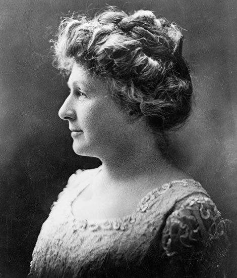
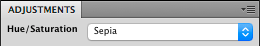

Sepia
4 April, 2017 – Art. 39
Annie Jump Cannon was nearly deaf throughout her career as an astronomer but she worked with beautiful colours and, with Edward C. Pickering, she is credited with the creation of the Harvard Classification Scheme, which classifies stars based on their temperatures and spectral types. (Read up on that in a separate article on Impossiblue.) It is only proper, then, to bring out the colours of said lady. And what could be more fitting than sepia, simulating with CSS the enchanting, dreamlike atmosphere that 19th century chemistry lended to photographic images? First, however, a word from MDN:
sepia() converts the input image to sepia. The value of amount defines the proportion of the conversion. A value of 100% [or 1] is completely sepia. A value of 0% [or 0] leaves the input unchanged. Values between 0% and 100% [e.g. .5 for 50%] are linear multipliers on the effect.
Greyscale vs. sepia()
Fig. 1. Left: The original photograph of Annie Jump Cannon. Right: A CSS sepia version.
The CSS
.sepia {
-webkit-filter: sepia(1);
filter: sepia(1);
}Photoshop vs. CSS
So, how does it stack up to that trusted Photoshop manipulation?
Fig. 2. The default Photoshop hue/saturation adjustment for sepia colour.

Fig. 3. Left: A Photoshop sepia version. Right: The CSS sepia version from figure 1. The point is not to rule in favour of any one of the techniques. What a user sees in Firefox may well look different from what I see here in Safari, anyway. With the obvious exception of skin tones, our eyes are very forgiving with colours when there is nothing to compare to. The point is more that CSS may obviate the reliance on a separate graphics editor. And it is possible to return to the original greyscale or full-colour version by erasing some CSS code, or to use the same original for different predefined effects.
Combining filter functions
Fig. 4. Left: The Photoshop sepia version from figure 3. Right: A CSS sepia version with a combination of functions. See CSS below for details.
The CSS
filter: sepia(.8) brightness(.9) contrast(1.1) saturate(.9) hue-rotate(-12deg);Note: While 0% through 100% is interchangeable with 0 through 1 in most CSS filters, there are exceptions. blur(), for instance, uses length values for the Gaussian function that determines how many pixels on the screen blend into each other, like so: filter: blur(6px). contrast() and saturate(), on the other hand, can take values exceeding 100%.
Tired of sepia?
The CSS
filter: sepia(1) hue-rotate(45deg); /* Image left */
filter: sepia(1) hue-rotate(180deg); /* Image right */